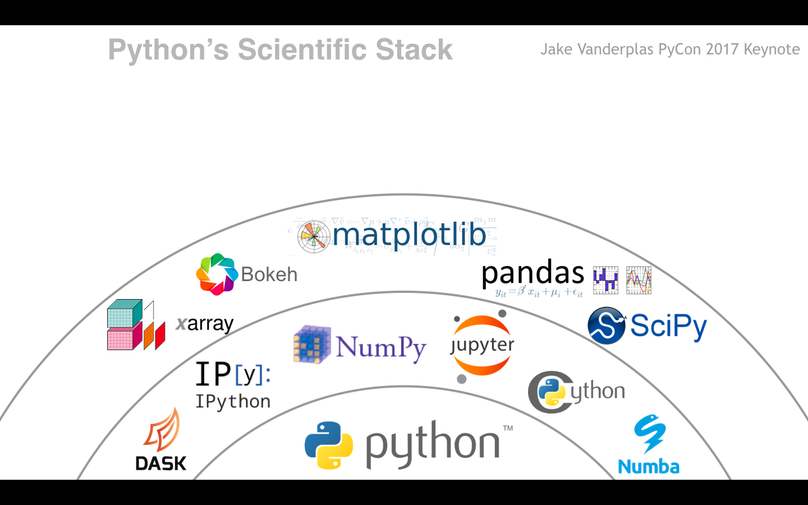

class: inverse, center, middle background-image: url(figs/realpython-filter.jpg) background-size: cover # Get started with scientific Python ### Potsdam (February 7-9, 2018) Benoît Bovy - GFZ, section 5.5 --- ## Overview of the Scientific (SciPy) Stack Hundreds (thousands) of libraries! -- Built on top of a few mature, core libraries. --- class: center, middle <img src="figs/scipy-stack1.png" width="100%"> --- class: center, middle <img src="figs/scipy-stack2.png" width="100%"> --- class: center, middle  --- class: center, middle <img src="figs/scipy-stack4.png" width="100%"> --- class: center, middle <img src="figs/scipy-stack5.png" width="100%">